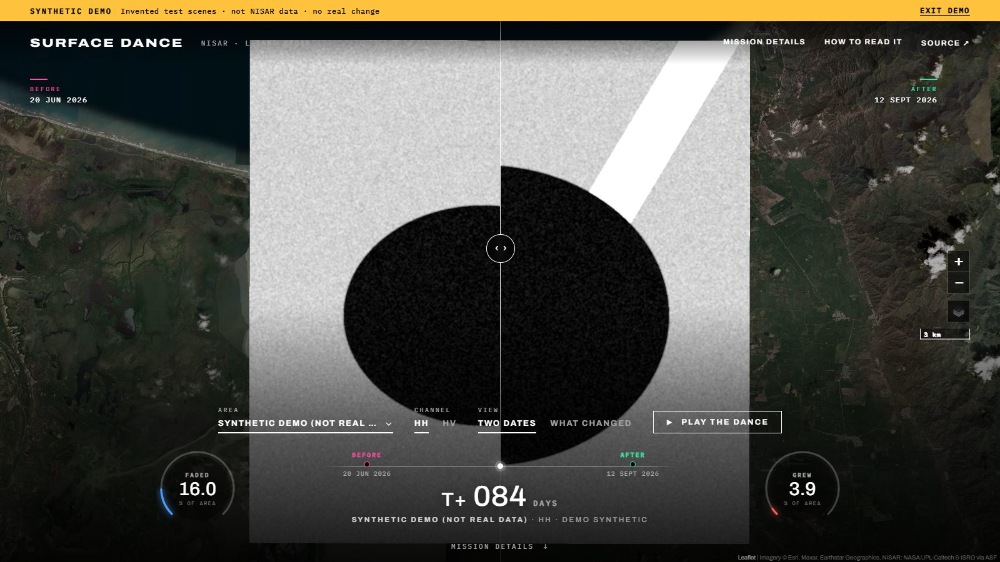
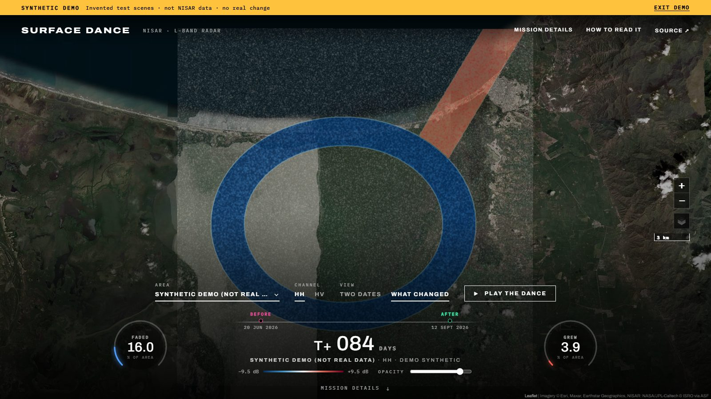

Los Bailarines del SAR · NASA Space Apps Challenge 2026
Surface
Dance
An open, interactive explorer that shows how Earth's surface moved between two dates, read by NISAR radar through cloud, night and snow.
ChallengeDancing with the SARs
DeadlineSun 15 Nov · 23:59 Bogotá
StatusViewer live · waiting for real scenes
01 · The challenge
What NASA asks for
An interactive app, open source and easy to use
Built on NISAR radar data (NASA–ISRO, L-band)
Track one type of surface change at a real place
Compare different dates, show the change clearly
Explain why it changed: the physical drivers
Tell it as a story: the Earth's surface dancing
Max 7 slides or a 30-second video. Public, no login.
Public link to the repository and the app. No login.
At least one NASA dataset or resource, with its full URL.
02 · The idea in four pictures
How a radar satellite sees change
NISAR sends a radio pulse to the ground and listens to the echo, like clapping in a dark room. It works at night and right through clouds.
Calm water bounces the pulse away, so almost no echo comes back. In radar images, water looks dark.
Trees, crops, rocks and broken ice scatter the pulse in every direction, and part of it returns. They look bright.
Same place, two dates. Where it got darker, water may have arrived (blue). Where it got brighter, the surface got rougher (red).
That is the whole app: two radar photos of the same place, a line to slide between them, and a map of what changed.
03 · Already built · branch main Live
What we already have
Live web app — map with a line to slide between two dates, "What changed" view, Play the dance, launch-style HUD.
NISAR pipeline — reads GCOV (HDF5), crops the area, filters speckle, computes change and publishes map layers.
Safety rules — refuses to compare scenes from different collections or CRIDs; every scene shows its date, collection and CRID.
Demo mode — synthetic scenes to test everything, always under a yellow "not NISAR data" banner.
Quality gate — every pull request gets a preview link and automatic tests; main only accepts tested changes.
04 · What we expect at the end
The final screen

These screenshots use synthetic test data. The goal is the same screens with real NISAR scenes of our study area — proposed: Ciénaga Grande de Santa Marta.
05 · Still to build for the challenge To do
What is missing
Data & science
01Confirm study area and the one-sentence questionJuan H.
02Download 2 NISAR GCOV scenes, same collectionTinjacá
03Record date, collection and CRID of each sceneTinjacá
04Check polarizations with --list (HH, HV)Moneeb
05Write why the surface changed (physical drivers)Santiago
06Approve method values: filter 5×5, threshold 3 dBSantiago
App & delivery
07Run the pipeline on real scenes and publish layersFredy
08Add the drivers text and final wording to the appFredy
097 demo slides with the dance narrativeDaira
10Test both public links from a clean deviceMoneeb
11Decide: project name, keep or remove demo modeJuan H.
12Fill the form, check every claim, submit by 22:00Juan H.
06 · Who does what
Team tasks
| Member | Task | Deliverable | Due · Bogotá |
|---|---|---|---|
| Juan S. Huertas OleaLead · research · story | Study area, research question, project name; owns the submission form | Question in one line; form submitted with every claim checked | Now · Sun 22:00 |
| Juan S. TinjacáGIS · remote sensing | Download two NISAR GCOV scenes of the same area, same collection | Files + collection, CRID and date in docs/DATOS.md | As soon as possible |
| Fredy ChaparroArchitecture · front · back | Run the pipeline on real data, keep the app, tests and repo healthy | Real layers live on the public site | Sun 10:00 |
| Santiago CalderónScience validation | Explain the physical drivers; veto any claim we cannot support | Drivers paragraph + approved method values | Sun 10:00 |
| Daira PatarroyoStory · design · video | Demo slides and the dance narrative; brand rules (no NASA logos) | 7 slides, public link | Sun 18:00 |
| Moneeb HussainSignals · software · Pakistan | Check polarizations are read right; test links from Pakistan; night shift | Polarization check + clean-device test report | Sun 18:00 |
07 · How we work
From task to live site
Each task becomes a GitHub issue with an owner
Work on your own branch, never on main
Open a PR that closes the issue
A private copy of the site and automatic checks
Fredy reviews; Santiago checks science text
The public site updates in 1–2 minutes
Data path
08 · Important links
Where everything lives
Live appfredyxander.github.io/bailarines-del-sar
Repositorygithub.com/fredyxander/bailarines-del-sar
Demo with synthetic data…/bailarines-del-sar/?demo=1
How to run the pipelineREADME · Flujo de trabajo
Scene log (collection · CRID · date)docs/DATOS.md
PR previews…/bailarines-del-sar/pr-preview/pr-<number>/
NISAR datasearch.asf.alaska.edu · nisar-docs.asf.alaska.edu
Reference documentsbase reference/
NextApprove this briefing → turn slide 6 into GitHub issues, one per task, with an owner.